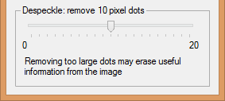
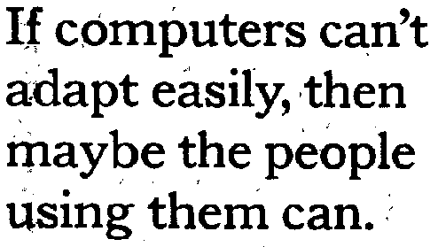
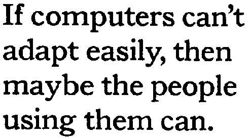
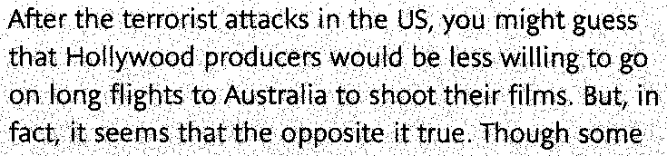
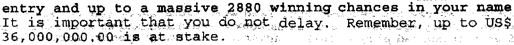
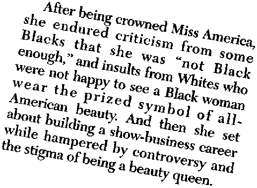
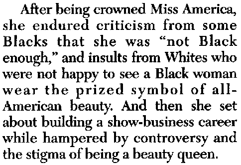
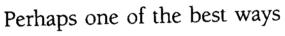

Tweet
Tweet
There are a number of things state-of-the-art OCR software can do to improve the scanned images for the consecutive reading process. Advanced OCR systems use several “angles” that allow to optimize and clean up the scanned image before the recognition takes place. In technical terms, we speak of “image processing” or “preprocessing” techniques.
Here’s one instance where the image gets improved before it is submitted to the OCR engine: the user “despeckles” the (black-and-white) images. (Despeckling color and greyscale images does not make sense.) Don’t remove spots that are too big: you run the risk of erasing the dots on the “i” symbols, the periods etc.

You then remove the “parasite” pixels (also called “salt and pepper noise”) from the image: think of ink and coffee stains, spurious pixels introduced because of the transmission of a fax etc. Spot removal obviously improves the recognition as the symbols are crisper, less bothered by surrounding “noise”.
 


And what happens when the documents were not placed carefully on the scanner’s flatbed or in the document feeder? Put the deskewing routine of your OCR software to work! With advanced OCR software, image lineskew of up to 10° can get corrected. That may not seem much, but when you actually see an image with 10 degrees of lineskew, you can hardly imagine scanning that carelessly!
 
The deskewing routines of state-of-the-art OCR software is optimized for OCR. The character bitmaps are left intact: the “blocks” of the individual symbols are put on a straight line, but the bitmap inside a character “cell” is not altered. (Distorting the individual symbols would lead to reduced recognition accuracy.)

skewed image (2° lineskew)
deskewed image (with intact character shapes)
The line is straight but the individual symbols are not distorted: the “blocks” of the discrete symbols are put on a straight line, but the bitmap inside a single block is not altered. (For (very) big characters and (very) long ligatures, this is not all always possible.)
deskewed image (with distorted character shapes)
Here, the individual symbols were distorted, which leads to reduced OCR accuracy.
OCR software can correct another scanning error as well: bad page orientations. When a page was scanned upside down or with a 90° rotation (to the left or to the right), the software can rotate it for you.
Training the system further — The accuracy of OCR software — How good are your scanning skills? — With a little help from the friends — Recognizing snapshots — Recognizing prescanned images and faxes — Repurposing PDF files
Home page — Intro — Scanners — Images — History — OCR — Languages — Accuracy — Output — BCR — Pen scanners — Sitemap — Search — Contact – Feedback